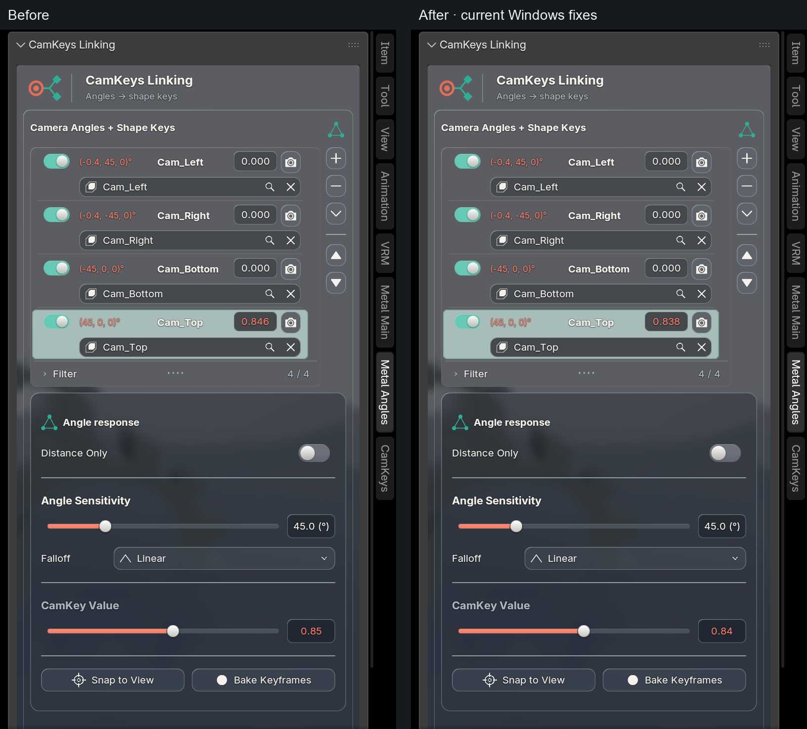
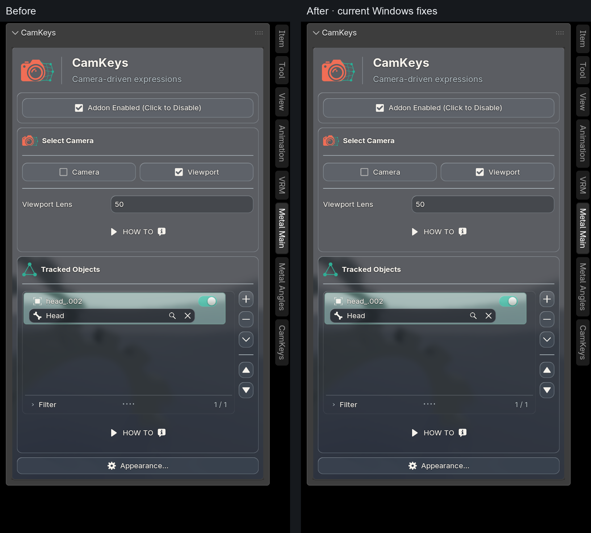
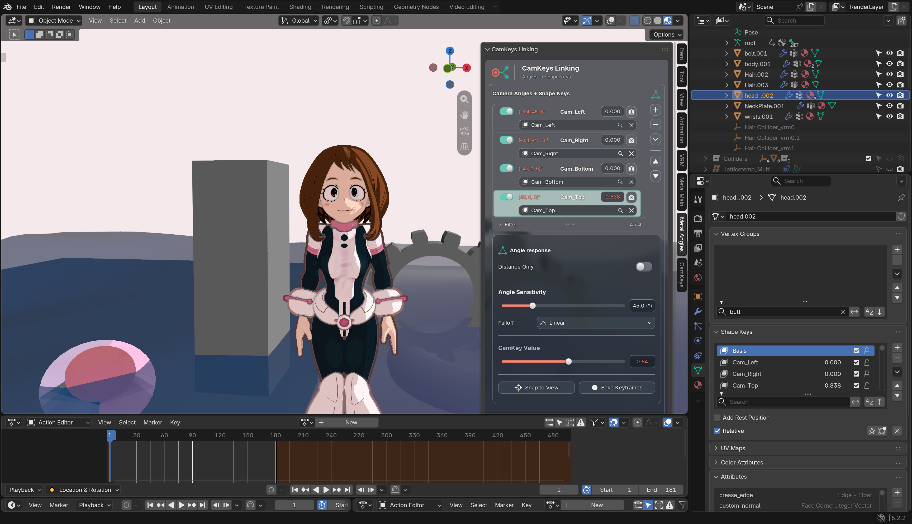
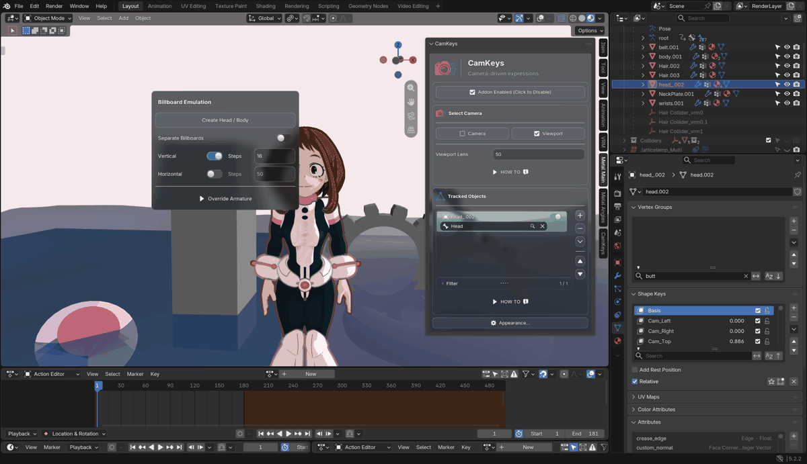
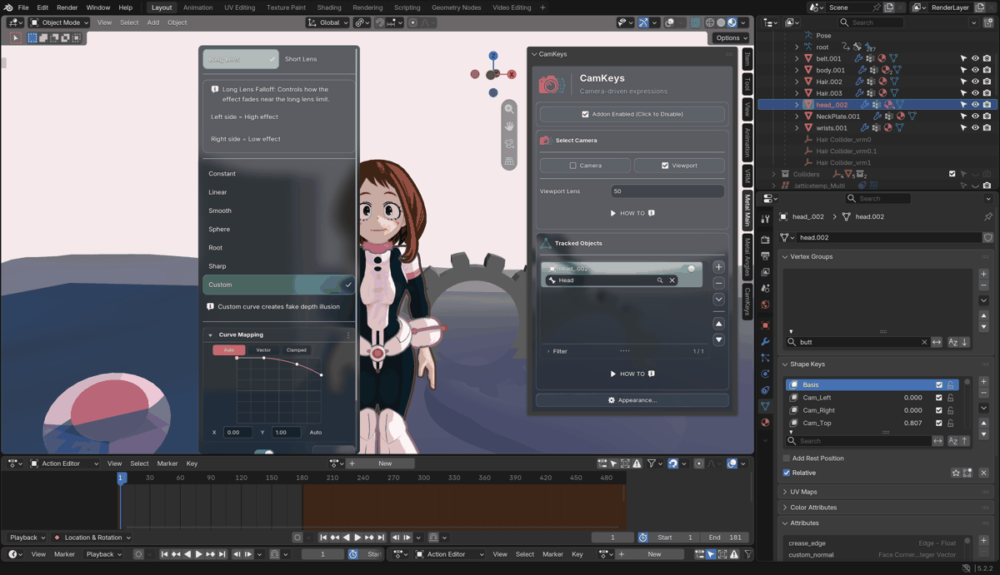
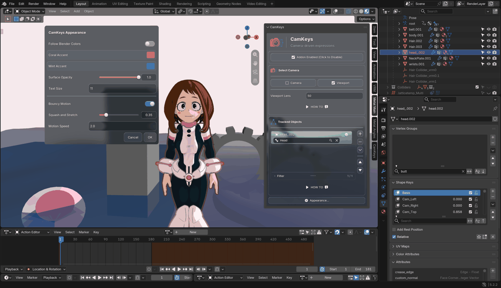

November 3, 2026 · Blender 5.2.2 d13f752e3b9c · Apple M5 Pro
The source-bound Mac certificate was renewed after affected-path GPU, output, lifecycle and fresh ordinary-admission checks. The native binary is unchanged. Windows source, binaries and certificates were not modified.
Remaining required work: 0 turns. Optional user review: 0–1 turn; no additional implementation forecast. Existing Blender sessions were not restarted or saved. Restart after saving your work to load the qualified package and updated modules together.
Across completed matched passes, orbit panel author/refresh fell from 1.79–1.98 ms to 0.45–0.48 ms. Re-authoring during live orbit went from 57–64 calls to zero. Painting fell from 2.60–2.95 ms to 2.09–2.24 ms. These are CPU submission measurements, not GPU frame time.
The complete scene remains expensive. Existing live Blender sessions and other apps stayed running, so whole-scene timing varies. A slower intermediate run is included below; no guaranteed FPS improvement or thermal improvement is claimed.
Actual implementation before/after. Numeric values vary as the live simulation settles; this is not a pixel-identical screenshot claim.



Early region captures omitted late BVT scene composition and were rejected for scene/glass review. These capture the completed window.
Billboard and falloff were deliberately anchored over contrasting scene content for this glass test. Appearance, Billboard and flattened falloff/curve all paint above the sidebar and close with Escape. Each GIF uses four opening samples, slowed for review; it is not a real-time animation recording.



Each cell: median panel author/refresh CPU time / completed scene publications per second. Five-second warmed workload, compilation count unchanged; GPU work drained only at interval boundaries. Idle keeps physics, UV animation and CamKeys enabled.
| Run | Full fixture | Orbit | Transform | Active idle |
|---|---|---|---|---|
| before-1 | pass | 1.79 ms / 12.72/s | 1.68 ms / 12.32/s | 1.80 ms / 14.36/s |
| before-2 | pass | 1.98 ms / 11.28/s | 1.96 ms / 10.55/s | 1.80 ms / 13.60/s |
| after-1 | pass | 0.45 ms / 13.06/s | 0.46 ms / 11.89/s | 0.47 ms / 14.39/s |
| after-2 | fixture assertion failed after timing | 0.60 ms / 10.33/s | 0.58 ms / 9.69/s | 0.53 ms / 12.97/s |
| after-3 | pass | 0.48 ms / 12.54/s | 0.44 ms / 12.44/s | 0.45 ms / 14.91/s |
| bvt-baseline-2 | pass | 0.46 ms / 12.79/s | 0.45 ms / 12.23/s | 0.48 ms / 14.27/s |
| bvt-baseline-3 | pass | 0.47 ms / 13.24/s | 0.48 ms / 12.03/s | 0.50 ms / 14.30/s |
after-2's later failure was an obsolete test-only attribute assertion, corrected for after-3. Its timing is retained above. The first BVT baseline used a different VRM dependency and was excluded; baseline-2 and baseline-3 use the same VRM 4.10.2 as the candidate.
Nine output images—final, viewport, animation, playblast, legacy, disabled and restored states—match prior qualified source exactly. Eighteen directional/world partition phases match their GPU oracle exactly; unaffected-source retention and transactional rollback pass. Worker animation, undo/redo, render scope restoration and disable/re-enable pass. Fresh current-source ordinary admission uses active shader/worker owners, no diagnostic override, and restores all 18 idle workers.
Across the completed repeated Uraraka checks, current-source production rates are 98.3%, 100.3% and 102.6% of the retained source for orbit, transform and active idle. These short shared-workstation results are a local regression check, not a universal speed claim. Prior qualification limits and other-platform gates remain unchanged.